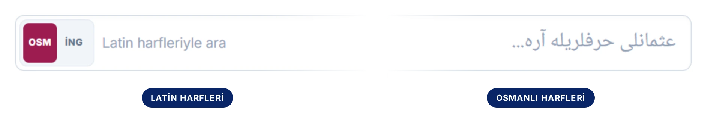
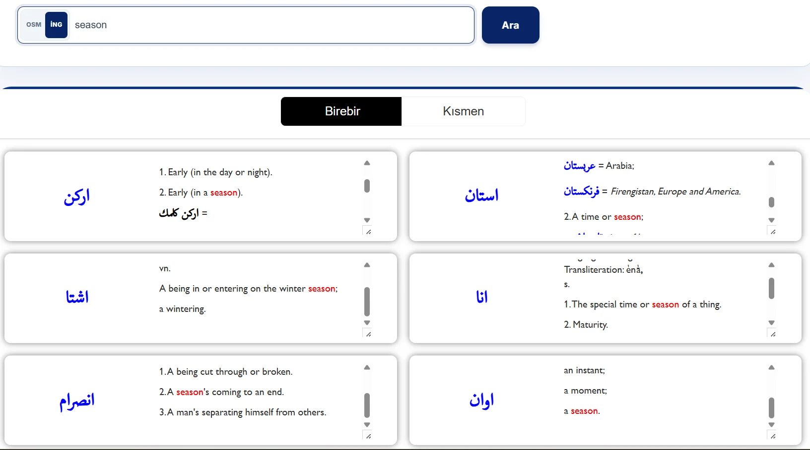
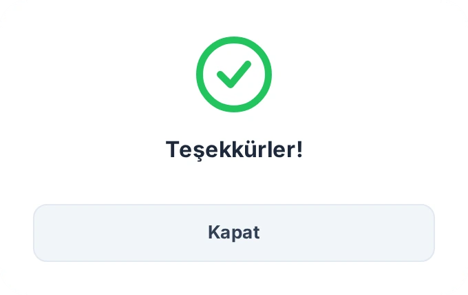
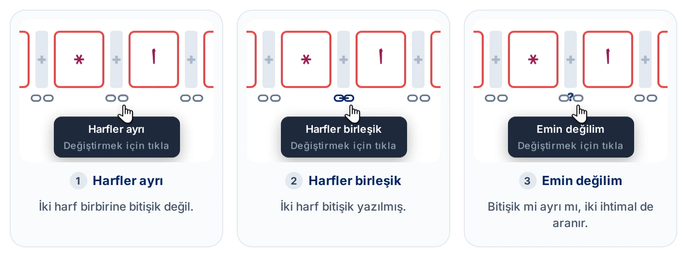
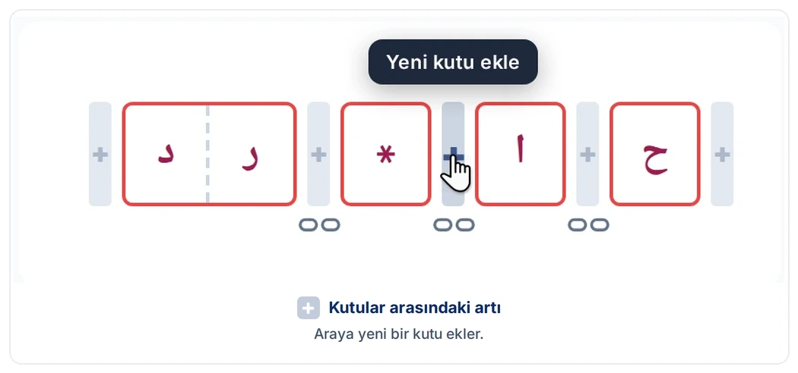
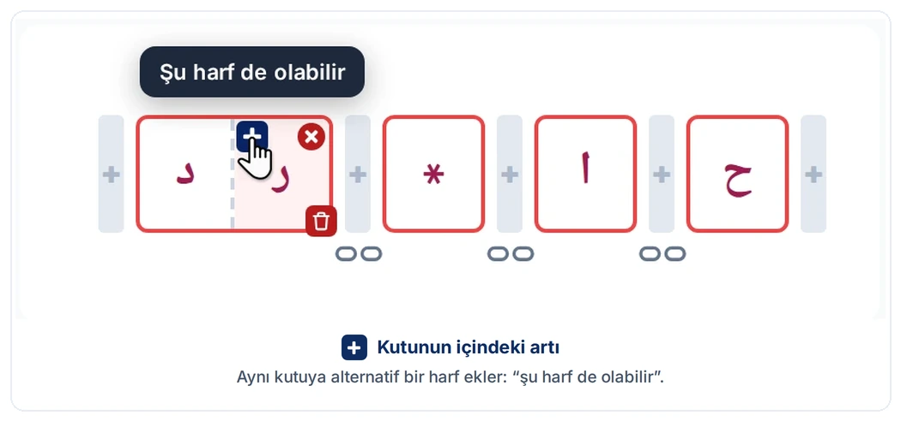
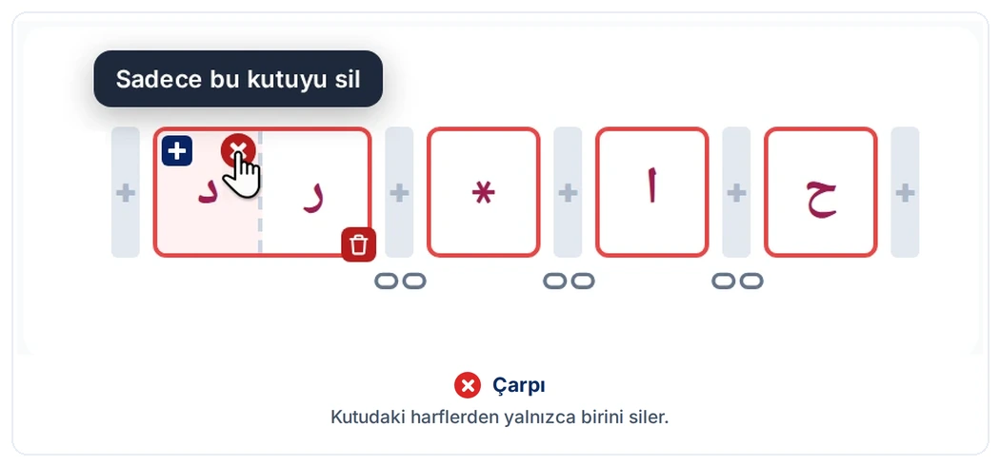
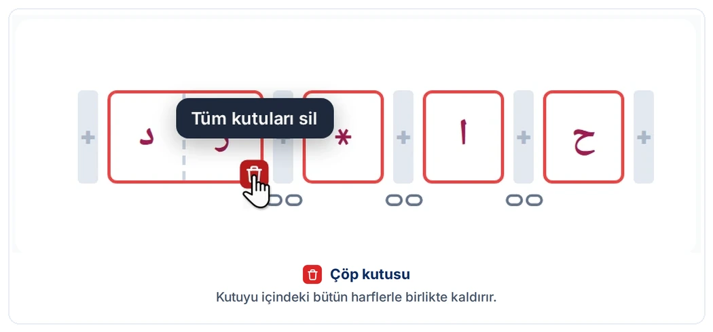

LexiQamus 3.0'ın arama ekranlarını, kelime çözücüyü, sonuç listesini ve sözlük sayfası penceresini adım adım anlatan kılavuz.
Ana Sayfa
LexiQamus iki ayrı arama biçimi sunar. Ara sekmesi okuyabildiğiniz bir kelimenin manasını sözlüklerde aramak, Kelime Çözücü ise okuyamadığınız bir kelimeyi elinizdeki ipuçlarından yola çıkarak bulmak içindir. İki sekme arasında kolayca geçiş yapabilirsiniz.
Ara butonunun sağında sözlük listesi yer alır. Aramanızı bütün sözlüklerde yapabildiğiniz gibi, yalnızca seçtiğiniz sözlükler içinde de yapabilirsiniz: listeyi açıp Tümünü Seç işaretini kaldırır, istediğiniz eserleri tek tek işaretlersiniz.
Ara Sekmesi
Okuyabildiğiniz bir kelimeyi bu sekmeden arar, sözlüklerdeki karşılıklarını görürsünüz.
Arama çubuğu
Arama çubuğu, kelimeyi iki alfabede de yazabileceğiniz tek bir alandır: sol yarı Latin, sağ yarı Osmanlı harfleri içindir. Kelimenin nasıl okunduğunu biliyorsanız Latin tarafına yazmanız yeterlidir.

OSM ve İNG: nerede aranacağı
Çubuğun başındaki OSM ve İNG butonları, yazdığınızın nerede aranacağını belirler. OSM seçiliyken veritabanındaki bütün sözlüklerde Osmanlıca kelimeler arasında arama yapılır.
İNG: İngilizce tanımlarda arama
İNG seçeneği, James Redhouse’un A Turkish and English Lexicon adlı sözlüğünde metin içi arama yapar. Bu eseri tam metin olarak dijitalleştirdiğimiz için maddelerin İngilizce karşılıkları da aranabilir: yazdığınız İngilizce kelimeyi tanımında geçiren bütün maddeler listelenir. Aradığınız kelime tanımların içinde renkli olarak işaretlenir.

Osmanlıca yazmak
Osmanlıca tarafa tıkladığınızda ekran klavyesi açılır. Harflere tek tek tıklayarak yazabilirsiniz.
Fakat klavyeyi kullanmak zorunda değilsiniz. Her tuşun üzerinde, o harfe karşılık gelen fiziksel klavye tuşu yazılıdır: A tuşu ا, B tuşu ب, SHF+Sص harfini verir. Yani kelimeyi kendi klavyenizden hızlıca yazabilir, sadece emin olmadığınız harfler için ekrana bakabilirsiniz.
Arama Sonuçları
Her iki arama biçimi de sizi aynı sonuç listesine götürür. Listenin başında kaç kayıt bulunduğu ve kaç sözlük ile cildin tarandığı yazar. Liste dört sütuna ayrılmıştır ve her satır, bir sözlükte geçen tek bir kaydı gösterir. Aranan kelime, en yalın hâlden en geniş biçime doğru Kök, Çekimli Biçimler, Türemiş Biçimler, İbareler ve Birleşik Kelimeler ve Kısmi Eşleşmeler başlıkları altında ayrı ayrı listelenir.
Kategori etiketi, sonucun maddeyle nasıl bir ilişki içinde olduğunu söyler. Her kategorinin kendi rengi vardır: etiket, satırın solundaki çizgi ve sözlük sayfasındaki kutular bu renkle gösterilir.
Madde Başı: Sözlükte kendi adına açılmış bir maddenin başlığıdır.
Alt Madde Başı: Bir madde başının altında yer alan ve ayrıca tanımı verilen bir alt maddedir.
İlişkili: Madde içinde geçen, madde başıyla anlamsal (semantik) ya da köken (etimolojik) bakımdan ilişkili olan kelimelerdir.
Satırda iki tıklama bölgesi
aSatıra tıklamakiki bölge, iki hedef
Her satır iki ayrı bölgeye ayrılır ve imleci satırın üzerine getirdiğinizde hangi bölgede olduğunuz renklenerek belli olur. Bu alanlara tıkladığınızda sizi aynı maddenin farklı konumlarına götürür.
Sol bölge, yani sonuç kelimesinin kendisi: Sonuca git. Orijinal sözlük sayfası açılır ve doğrudan kelimenin geçtiği yer karşınıza gelir. Buradan yukarı kaydırarak maddenin başına da çıkabilirsiniz.
Sağ bölge, yani madde başı ve sözlük bilgisi: Madde başına git. Aynı sayfa açılır, fakat bu kez doğrudan maddenin başına gidersiniz.
bKelimeye tıklamakyeni sekmede arama
Bir sonuç satırında dört sonuç değeri yer alır: sonucun (1) Osmanlıca yazılışı ve (2) Latin okunuşu, madde başının (3) Osmanlıca yazılışı ve (4) Latin okunuşu. İmleci bu kelimelerden birinin tam üzerine getirdiğinizde Bu kelimeyi ara ipucu belirir. Tıkladığınızda o kelime bütün sözlüklerde aranır ve sonuçlar yeni bir sekmede açılır; bulunduğunuz sonuç sayfası olduğu gibi kalır. Böylece bir sonuçta ya da madde başında gözünüze çarpan kelimenin peşine, aramanızı kaybetmeden düşebilirsiniz.
Sözlük ve künye
Satırın en sağındaki buton o kaydın künye bilgilerini açar. Eserin adı, yazarı, yılı, cildi ve sayfası burada toplu olarak yer alır.
Künye penceresinde atıf üç ayrı biçimde hazır olarak sunulur: APA, Chicago ve Harvard. Kullanacağınız biçimi seçip tek butonla kopyalayabilirsiniz.
Latin okunuşlar
aİki durumotomatik üretim ve editör onayı
Sonuç satırlarında her Osmanlıca kelimenin yanında bir Latin okunuşu yer alır. Bu okunuşların bir kısmı ekibimiz tarafından girilmiş ve başka bir ekip üyesinin kontrolünden (peer review) geçerek onaylanmıştır. Geri kalanı ise Osmanlıca yazılıştan hareketle otomatik olarak üretilmiştir ve bu yüzden her zaman isabetli olmayabilir.
İkisini ilk bakışta ayırt edebilirsiniz: otomatik üretilmiş okunuşlar soluk, editör onaylı okunuşlar koyu renkte gösterilir. Aşağıdaki ilk iki satırdaki nazar otomatik üretilmiştir, üçüncü satırdaki ise editör onaylıdır.
bDoğruokunuşu onaylamak
Bir okunuşun üzerine geldiğinizde yanında küçük bir kutu açılır. Kutunun başındaki etiket okunuşun durumunu söyler: Otomatik üretim ya da Editör onaylı. Altındaki iki buton ise okunuş hakkında bize geri bildirim vermeniz içindir.
Doğru butonuyla okunuşun isabetli olduğunu tek tıkla bildirirsiniz; buton yeşile döner. Otomatik üretilmiş okunuşlarda bu işaret, hangi okunuşların doğru olduğunu görmemize yardımcı olur. İşaretlenen okunuşları editörlerimiz kontrol eder; kontrolden geçen okunuş Editör onaylı hâline gelir ve koyu renkte gösterilmeye başlar.
cDüzeltdüzeltme bildirmek
Düzelt butonu bir bildirim penceresi açar. Pencerenin başında kelimenin Osmanlıca yazılışı ile okunuşu durur, altında üç seçenek bulunur. Yanlış seçeneği, pencere açıldığında seçili gelir ve okunuşun neden yanlış olduğunu açıklamanızı ister; doğrusunu biliyorsanız onu da yazabilirsiniz. Okunuşun doğru olduğunu belirtip bir not eklemek isterseniz Doğru’yu seçersiniz; bu durumda not yazmak isteğe bağlıdır. Doğru ya da yanlış demeden okunuş hakkında söylemek istediğiniz bir şey varsa Görüş’ü kullanırsınız.
Açıklamanızı yazıp Gönder’e bastığınızda bildiriminiz bize ulaşır ve pencerede bir teşekkür mesajı görünür. Gelen bildirimleri de editörlerimiz inceler; okunuş gerekiyorsa düzeltilir ve kontrolün ardından Editör onaylı hâline gelir. Vazgeçerseniz İptal’e basmanız yeterlidir.

Aynı kelimenin farklı yazılışları
Osmanlı alfabesinde, Türkçe telaffuz açısından aynı ya da birbirine çok yakın okunan harfler vardır: ث ile س, ت ile ط gibi. Modern öncesi dönemde imlada bir standart da yoktu; özellikle Türkçe kelimelerin Osmanlı harfleriyle yazımında birden fazla biçim kullanılıyordu. Bu yüzden aradığınız kelime sözlükte başka türlü yazıldığı için gözden kaçabilir.
Sonuç listesinin sağ üstündeki iki araç bu sorunu çözer. Yazılışa Göre Ara, kelimenin sözlüklerde kayıtlı öteki yazılışlarını gösterir; Benzer Okunuş ise ses bakımından benzer harfleri de arayarak listeyi genişletir.
aYazılışa Göre Arakayıtlı öteki yazılışlar
Bu butonlar bir tahmin değildir; sözlükleri dijitalleştirirken sisteme veri olarak girdiğimiz kayıtlardan gelir.
Aşağıdaki örnekte merdiven aranmış. Kelimenin sözlüklerde üç ayrı yazılışı olduğunu görüyorsunuz: مردوان, مرديون ve نردبان. Listedeki sonuçlar da bu yazılışlardan gelir; her satırın solunda hangi yazılıştan geldiği durur. Bir butona tıkladığınızda arama doğrudan o yazılışla yenilenir ve yeni bir sekmede açılır.
bBenzer Okunuşses bakımından benzer harfler
Buton, aramanızdaki harflerin yerine ses bakımından benzerlerini de koyarak arar; yanındaki sayı, genişletmenin kaç sonuç getirdiğini gösterir.
Aşağıdaki örnekte پاسترمه aranmış. Liste, aradığınız yazılışın sonuçlarını gösterir; sözlüklerde bu yazılışla iki kayıt bulunmuştur.
Benzer Okunuş butonuna bastığınızda arama, پ yerine ب ve ت yerine ط konarak genişletilir. Karşınıza üç kayıt daha gelir: باسترمه, باسطرمه ve پاسطرمه.
Bunlar aradığınız kelimenin sözlüklerdeki başka yazılışlarıdır. Aramanız gerektiğini bilemeyeceğiniz, çoğu zaman tahmin bile edemeyeceğiniz bu kayıtlara ve içerdikleri manalara böylece tek tuşla ulaşırsınız.
Benzer Eşleşmeleri Tara
Aradığınızı listede bulamadıysanız sayfanın altındaki bu butona basın.
LexiQamus, girdiğiniz yazılışa harf harf yakın duran kelimeleri tarar ve numaralı bir liste halinde önünüze getirir.
Orijinal Sözlük Sayfası
Bir sonuç veya madde başı bölgesine tıkladığınızda sözlüğün orijinal sayfası bir pencerede açılır. Karşınızdaki yalnız bir taranmış sayfa değildir: dijitalleştirilmiş kelimeler sayfa üzerinde kategorilerine göre renkli kutularla gösterilir ve sayfa bütünüyle etkileşimlidir.
Bir kutunun üzerine geldiğinizde kelimenin Osmanlıca yazılışını ve Latin okunuşunu görür, tıkladığınızda o kelime için yeni bir arama başlatırsınız. Maddeyi dilim, sütun ya da sayfa olarak görüntüleyebilir, oklarla sözlükte gezinebilir, bir hata fark ettiğinizde aynı yerden bildirebilirsiniz.
Pencere ilk açıldığında, yukarıdaki genel görünümde olduğu gibi, Dilim görünümü etkindir. Dilim, sözlükteki tek bir maddedir; madde başını ve ona ait açıklamanın tamamını kapsar. Alttaki şerit, aradığınız maddenin sözlüğün kaçıncı sayfasında, hangi sütununda ve o sütunun kaçıncı dilimi olduğunu söyler.
Sütun'a tıkladığınızda sütunun tamamı açılır. Sayfa'ya tıkladığınızda ise sayfanın tamamını görürsünüz. Dijitalleştirilmiş kelimeler üç görünümde de işaretli kalır.
Renkli ve gri kutular
Maddede dijitalleştirilmiş olan kelimeler orijinal sayfa üzerinde kutu içine alınır. Kutuların rengi kelime kategorisine göre değişir; sonuç listesindeki kategori ayrımının aynısı burada da geçerlidir.
Gri duran kelimeler de dijitalleştirilmiştir. Üzerlerine geldiğinizde renklenir ve dijital karşılıkları görünür.
Kelimenin dijital karşılığı
aTek kelimeyazılış ve okunuş
Bir kutunun üzerine geldiğinizde kelimenin Osmanlıca yazılışı ve Latin okunuşu alt alta belirir.
bÖbeğin parçasıiki katman
Kelime bir öbeğin parçasıysa iki katman birden görürsünüz: üstte imlecin bulunduğu kelimenin dijitali, altta öbeğin tamamının dijitali.
Kelimeye tıklamak
Orijinal sayfa üzerindeki bir kelimeye yahut beliren dijital değerlerin üzerine tıkladığınızda o kelime için yeni bir arama başlar ve yeni sekmede açılır. Böylece okuduğunuz maddeden ayrılmadan yan yollara girebilirsiniz.
Aşağıdaki görselde işaretlenen beş yerin her biri böyle bir arama başlatır: sözlük sayfasındaki kelime ile üstte ve altta beliren kutuların Osmanlıca ve Latin satırları.
Hata bildirme
Dijitalleştirmede bir hata olduğunu düşünüyorsanız kelimenin üzerine gelin. Kelimenin dijital karşılığının yanında açık mavi bir uyarı işareti belirir. İmleci bu işaretin üzerine getirdiğinizde işaret kırmızıya döner ve Hata bildir yazısı görünür; basınca bildirim penceresi açılır.
Açılan pencerede kelime hazır olarak gelir. Altındaki alana hatayı yahut önerdiğiniz düzeltmeyi yazıp gönderirsiniz.
Sözlükte gezinme
Pencerenin iki yanındaki oklarla tek tıkla gezinebilirsiniz. Oklar dilim, sütun ve sayfa görünümlerinin hepsinde çalışır ve o anki görünüme göre ilerler: dilim görünümünde bir önceki ya da sonraki madde başına, sütun görünümünde bir önceki ya da sonraki sütuna, sayfa görünümünde ise bir önceki ya da sonraki sayfaya geçersiniz.
Kelime Çözücü
El yazması bir metinde okuyamadığınız bir kelimeyle karşılaştığınızda kullanacağınız araç budur. Okuyabildiğiniz harfleri girer, okuyamadıklarınız için işaret bırakırsınız; LexiQamus bu ölçütlere uyan kelimeleri listeler.
Bir kutuya tıkladığınızda açılan temel klavye, Osmanlı alfabesinin her harfini tek tuşla sunar. Harflere tıklayarak yazarsınız; isterseniz kutulara kendi klavyenizden de girebilirsiniz.
Temel klavye, arama yapmak ve sonuç bulmak için bütünüyle yeterlidir. Bir harfin farklı yazım biçimleri vardır; temel klavyede o harfi girdiğinizde bu biçimlerin hepsi zaten aranır. Örneğin elif (ا) tuşu, medli ve hemzeli elifleri (آ, أ, إ) de kapsar.
Klavyenin sol altındaki Gelişmiş butonu ise bu biçimleri ayrı ayrı tuşlar hâlinde gösteren bir klavye açar. Aradığınız kelimenin yazılışını tam olarak biliyor ve sonuçları o kadar dar tutmak istiyorsanız kullanabilirsiniz; olağan aramalarda gerekmez.
Gelişmiş klavyedeki ][ tuşu sıfır-boşluk karakteridir. Kimi ekli kelimelerde ek, normalde birleşeceği harfe bitiştirilmeden yazılır: kediye kelimesi کدییه yerine کدییه biçiminde olabilir. Bu tuş o noktaya bağlantısız bir geçiş koyar; böylece boşluk kullanıp sonuçları gereksiz yere genişletmeden bu kelimeleri bulursunuz.
bHarflernormal ve özel karakterler
Bir kutuya tıkladığınızda harf klavyesi açılır. Buradan hem normal harfleri hem de benzer şekilli harfleri temsil eden özel karakterleri girebilirsiniz.
Klavyedeki yıldızlı mavi tuşlar bu özel karakterlerdir. Her biri aynı iskelete sahip, yalnızca noktaları farklı olan harflerin hepsini birden arar; noktalarını okuyamadığınız bir harf için bunları kullanabilirsiniz. (Kutularla arama mantığının bütünü gibi, yıldızlı karakterler de LexiQamus’un geliştirdiği bir yeniliktir; ayrıntısı için LexiQamus 1.0)
Tuşlara tıklamak zorunda değilsiniz. Bir kutunun üzerine geldiğinizde hatırlatıldığı gibi, harfleri kendi klavyenizle de yazabilirsiniz.
c ve ∞okunamayan harfler
Üstteki iki yeşil tuş önemlidir. okunamayan tek bir harf demektir. ∞ ise adedi bilinmeyen, bir veya birden fazla okunamayan harf anlamına gelir. Aramanız sonuç vermiyorsa, emin olmadığınız kısma bu işaretleri koyarak aramayı genişletebilirsiniz.
Kutular
aKutular ve zincirlerbitişik, ayrı, emin değilim
Her kutu bir karakteri temsil eder.
Kutuların arasındaki butonlarıyla araya yeni kutu eklersiniz. Kutuların altındaki zincir işaretleri harflerin bitişik olup olmadığını gösterir; bunu belirttiğinizde sonuçlar daralır.
Bir zincirin üç durumu vardır ve üzerine tıkladıkça sırayla değişir:
1Harfler ayrı
2Harfler birleşik
3Emin değilim
Bitişik olup olmadığını kestiremediğiniz yerde Emin değilim’i seçerseniz iki ihtimal de aranır.

bKutu butonlarıekleme, silme, alternatif
Bir kutunun üzerine geldiğinizde köşelerinde iki küçük buton, altında da bir çöp kutusu belirir. Kutuların arasındaki gri çubuklar ise yeni kutu eklemek içindir:




cTek kutuda birden fazla harfkarışan harfler
Bir kutuya birden fazla harf de girebilirsiniz. و, د ve ر gibi birbirine karışan harflerde, ihtimallerin hepsini aynı kutuya koyup hepsini birden aratmış olursunuz. Alternatif harfi kutunun içindeki butonuyla eklersiniz.
Aşağıdaki örnekte tek harfli kutular, iki ve üç alternatifli kutular, okunamayan bir harf için ve yıldızlı bir harf bir arada görünüyor; kutuların altındaki zincirler de bağlı, emin değilim ve ayrı durumlarında.
Alternatif harflerin yanına boş bir kutu da ekleyebilirsiniz. Boş kutu “burada harf olmayabilir” demektir; arama, kelimenin o kısmında harf bulunmayan sonuçları da hesaba katar.
Örnek arama
Diyelim ki bir belgede aşağıdaki kelimeyle karşılaştınız. Üzerine mürekkep dökülmüş ve bir harfi okunmuyor; ama öteki harfleri seçebiliyorsunuz.
Okuyabildiğiniz harfleri yerlerine göre kutulara girer, okunamayan harfin yerine bırakırsınız:
حا*ر
Ara’ya bastığınızda bu kalıba uyan kelimeler listelenir.
Sonuçlar
Ara butonuna bastığınızda, milyonlarca ihtimal arasından girdiğiniz ipuçlarına uyan kayıtlar listelenir. Sonuçlar en sade biçimden en genişe doğru başlıklar altında toplanır.
Sonuç satırları Ara sekmesindeki arama sonuçlarıyla aynı şekilde çalışır. Kategorileri, tıklama bölgelerini ve künye bilgisini Arama Sonuçları bölümünde bulabilirsiniz.